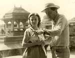

reżyseria: Ewa i Czeslaw Petelscy
scenariusz: Ewa i Czeslaw Petelscy (według powieści Wojciecha Żukrowskiego)
zdjęcia: Maciej Kijowski
muzyka: Jerzy Maksymiuk
scenografia: Jerzy Skrzepinski
występują: Krzysztof Chamiec (Jan), Laura Łącz (Margit), Ewa Szykulska (Judyta), Witold Pyrkosz (Fedunowicz) i inni
produkcja: WFF Łódź, WFD, Iluzjon
Akcja filmu toczy się w 1956 roku w ambasadzie PRL w New Delhi.
Jan Tokarski przeżywa romans z piękną Margit. Jest już bliski myśli porzucenia żony i dzieci, które zostały w kraju. Jednak pewnego dnia, podczas randki w kinie, ogląda wstrząsającą kronikę filmową z rozruchów w Poznaniu.
Poruszony do głębi wydarzeniami, zachodzącymi w ojczyźnie staje przed fundamentalnym problemem określenia własnej przynależności narodowej.